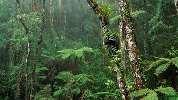
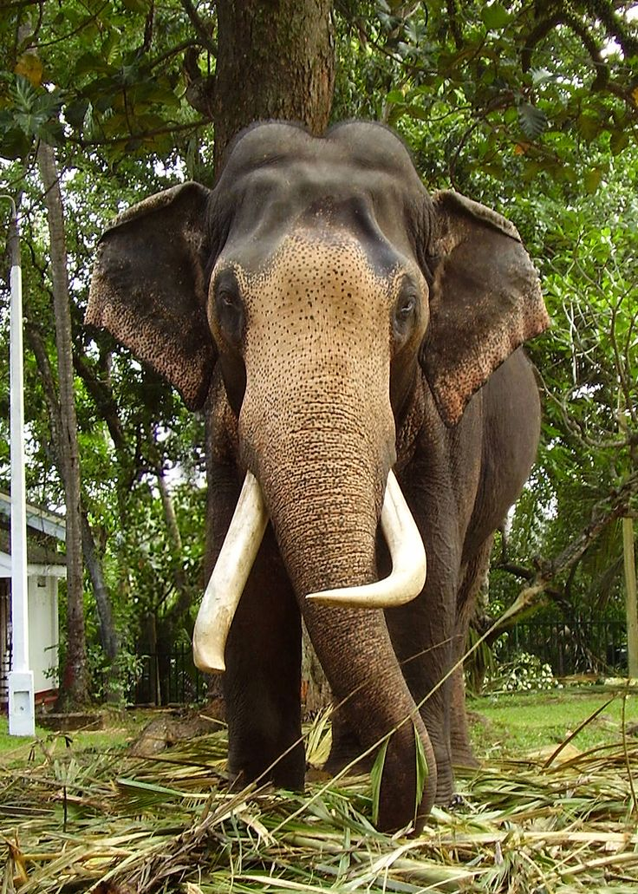

Rainforests
Highland Plains
Coastal Wetlands
Sinharaja Forest Reserve
Kanneliya-Dediyagala-Nakiyadeniya (KDN) Forest Complex
Knuckles Mountain Range
Horton Plains National Park
Hakgala Strict Nature Reserve
Peak Wilderness Sanctuary
Bundala National Park
Muthurajawela Marsh
Bentota National Holiday Resort Complex

For more information on Sri Lankan leopards, click here!
For more information on Sri Lankan animals, click here!


Critically Endangered:
- Ceylon Arjun Tree (Terminalia arjuna): A tree species facing threats due to habitat loss and over-exploitation.
- Sri Lankan Krait (Bungarus ceylonicus): A venomous snake species, threatened by habitat degradation and persecution.
Endangered:
- Red Slender Loris (Loris tardigradus): An endemic primate species facing habitat loss and fragmentation, as well as illegal pet trade.
- Ceylon Swallowtail (Papilio buddha): A butterfly species endemic to Sri Lanka, threatened due to habitat destruction and fragmentation.
- Sri Lankan Frog Species (e.g., Nannophrys marmorata): Several frog species endemic to Sri Lanka are endangered due to habitat loss and climate change.
- Ceylon Spurfowl (Galloperdix bicalcarata): An endemic bird species facing threats from habitat destruction and hunting.
Vulnerable:
- Sri Lankan Leopard (Panthera pardus kotiya): Although not yet endangered, the Sri Lankan Leopard faces threats such as habitat loss, poaching, and human-wildlife conflict.
- Sri Lankan Elephant (Elephas maximus maximus): The Sri Lankan subspecies of the Asian elephant is considered vulnerable due to habitat fragmentation and human-wildlife conflict.
- Sri Lankan Purple-faced Langur (Semnopithecus vetulus): This primate species is vulnerable due to habitat loss and hunting.
Sri Lanka's Sloth Bear